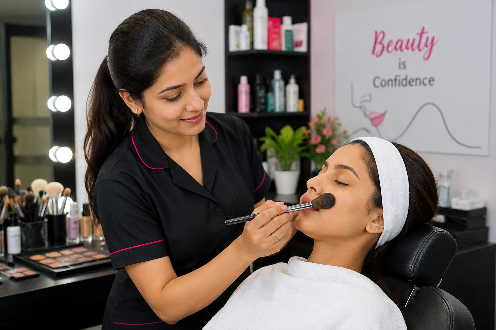

- Imagine you are getting ready for a wedding, function, or school program.
- You want your hair, makeup, and skin to look neat and beautiful.
- You will go to a beauty parlour. There, someone will do makeup, hairstyling, skincare, and beauty treatments for you.
- That person is called a Beautician.
- 👉 In simple words: Beauticians make people look beautiful through makeup, skincare, hairstyling, and beauty services.
Beautician
🧑🎨 What Do They Do?

🎓 How to Become a Beautician
These Beautician and Cosmetology programs help students learn makeup, hairstyling, skincare, beauty treatments, salon management, and professional beauty skills.
ITI in Cosmetology (NCVT/SCVT)
Duration: 1 Year (2 Semesters)
Eligibility: 10th Pass
Entrance Exam: State-Level ITI Merit Selection
Diploma in Beauty Culture and Cosmetology (Polytechnic)
Duration: 2 – 3 Years
Eligibility: 10th Pass
Entrance Exam: State Polytechnic Entrance Exams
Advanced Diploma in Aesthetics and Hair Design
Duration: 1 Year
Eligibility: 10th Pass or above
Entrance Exam: Direct Admission
📝 Exam Details
(Click on the exam name to see full details)
State ITI Selection State Polytechnic Entrance ExamsNote: Beautician and cosmetology courses focus on practical beauty skills, makeup, hairstyling, skincare, salon training, and customer service.
These advanced Beautician and Cosmetology programs help students learn professional makeup, skincare, hair designing, spa management, salon management, and beauty wellness services.
B.Voc (Bachelor of Vocation) in Beauty & Wellness / Cosmetology
Duration: 3 Years
Eligibility: 12th Pass from any stream
Entrance Exam: CUET UG (Common University Entrance Test) / State Skill University Aptitude Screenings
Advanced Diploma in Cosmetic Technology / Spa Management
Duration: 1 Year
Eligibility: 12th Pass from a recognized school board
Entrance Exam: Merit-Based selection on Class 12 final marks
📝 Exam Details
(Click on the exam name to see full details)
CUET UG State Skill University Aptitude Screenings Merit Based AdmissionNote: These courses focus on advanced beauty treatments, salon management, skincare, makeup artistry, hair styling, spa therapies, and professional client services.
These certification programs help students learn practical beauty skills, makeup, hairstyling, skincare, spa treatments, and salon services.
Assistant Beauty Therapist / Hair Stylist Certification (NSQF Level 3/4)
Duration: 3 – 4 Months (Approx. 400-500 Hours)
Eligibility: 8th or 10th Pass
Provider: National Skill Development Corporation (NSDC) / Beauty & Wellness Sector Skill Council (B&WSSC)
Certificate in Professional Makeup Artistry and Airbrush Techniques
Duration: 1 – 2 Months
Eligibility: Open to all (10th or 12th Pass preferred)
Provider: VLCC Institute / Orane International / Lakmé Academy
International Diploma in Beauty and Cosmetology
Duration: 6 Months – 1 Year
Eligibility: 10+2 Pass from any stream
Provider: CIDESCO India / CIBTAC Approved Global Technical Institutes
Note: These certification courses mainly focus on practical beauty skills, client handling, salon training, makeup artistry, hairstyling, and skincare services.
Note:
(Age limits, marks, and admission process may vary depending on the college or state. These courses are available in many colleges and universities across India. You can choose colleges based on your location, budget, and entrance exams.)
🏛️ Top Colleges & Institutes for Beautician & Cosmetology in India
(Tap on a college to view details)
After 10th (ITI & Polytechnic Programs)
Government Industrial Training Institute (ITI) for Women, (New Delhi) Government Industrial Training Institute (ITI), Aundh (Pune) Government Women's Polytechnic, Patna Government Polytechnic for Women, FaridabadAfter 12th (Degree & Advanced Beauty Programs)
Symbiosis Skills and Professional University (SSPU), Pune Medhavi Skills University (MSU), Sikkim Guru Nanak Dev University (GNDU), Amritsar Atlas SkillTech University, MumbaiSTEP 1
Imagine you are working as a Beautician.
STEP 2
A customer visits your beauty parlour for makeup and hairstyling for a special function.
STEP 3
You help the customer choose the makeup style, hairstyle, and beauty treatments.
STEP 4
You carefully do the makeup, skincare, and hairstyling using beauty products and tools.
STEP 5
The customer feels happy and confident after seeing the final look.
STEP 6
If helping people look beautiful and confident excites you, this career may suit you.
🏬
Beauty Parlours
Provide makeup, hairstyling, skincare, and beauty treatments for customers.
💇
Hair & Beauty Salons
Offer haircuts, hair styling, hair coloring, and beauty services.
💍
Wedding & Bridal Studios
Help brides and clients get ready for weddings and special functions.
🎬
Fashion & Media Industry
Work with models, actors, and performers for makeup and styling.
🏨
Hotels & Resorts
Provide beauty and wellness services for guests and clients.
🧴
Cosmetic & Skincare Companies
Work with beauty products, skincare brands, and cosmetic services.
🏠
Home Beauty Services
Visit customers at home and provide beauty and makeup services.
✈️
Abroad Opportunities
Work in salons, spas, beauty studios, and fashion industries in different countries.
(Click Yes or No for each question)
1. Do you enjoy doing makeup, hairstyling, or skincare?
2. Have you ever tried doing makeup or hairstyling for yourself or someone else?
3. Have you ever wondered how beauticians make people look more beautiful and confident?
4. When you see a beautiful hairstyle or makeup look, have you ever thought, “How do beauticians do this so perfectly?”
5. Imagine a customer visits your beauty parlour for a wedding makeover. You carefully do the makeup, hairstyle, and skincare, and the customer feels happy and confident after seeing the final look. Does this excite you?